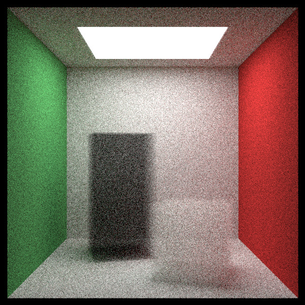

Game Development
A short adventure game about a curious creature and moon clowns, made in collaboration with keehar. Developed story, composed original songs and sound design and effects, and implemented gameplay code and systems, including the inventory backend and UI, as well as item, environment and NPC interactions.
Developed code and gameplay in C# utilizing the Unity Engine, Visual Studio, using Github for version control and Notion for task management. Music and sound effects written and produced in Ableton Live Studio 11.
- Configurable camera states (positioning, rotation, aspect ratio, FOV, defocus disk, per-pixel sampling)
- Spheres (motion blur optional) and quads
- Materials (dielectric, metal, lambertian, diffuse light, volumetrics)
- Textures (UV image mappings, checkering, Perlin noise)
- AABB bounding boxes & hierarchical optimization via bounding volume node splitting
- Rotation and translation via object instancing
Raytracer program written in C++ as a learning exercise to understand more about computer graphics rendering. Features include:
Planning object scaling, triangle shaped hittable objects, and multithreading support, all leading towards importing of custom 3D models for raytracing rendering. However, this project was for fun and I am ready to make new things, so it may be a while.
Machine Learning
Fed album covers into various self-built generative adversial network architectures (GANs) in order to generate genre-representative artwork from random noise tensors.
Developed in Python utilizing PyTorch, Pillow, Matplotlib & OpenCV libraries in a Google Colab environment in collaboration with another student.


Loaded and preprocessed a set of clothing images, and then designed, constructed and tuned convolutional neural network architectures (vanilla CNNs versus an autoencoder classifier) to identify the particular type of clothing.
Developed in Python utilizing PyTorch, Pillow, & Matplotlib libraries in Jupyter Notebooks.

Iteratively engineered a natural language dataset made up of Yelp reviews, developed an automated framework for training, optimizing, and evaluating support vector machines models, and then reviewed validation set accuracy results.
Developed in Python utilizing SKLearn, NLTK, Matplotlib, & Pandas libraries in Jupyter Notebooks.

Software Projects
Implemented optimal and fast pathfinding algorithms for the Traveling Salesperson problem utilizing the branch-and-bound algorithm, minimum spanning trees, and Prim's algorithm. Created custom coordinate data structures from input data to read in coordinate maps from the command line and display in terminal.
Developed in C++ utilizing the Standard Template Library.

Read in a text files representing a map filled with different terrain types from the command line to hunt for a treasure tile utilizing depth-first search and breadth-first search. Designed and implemented a backtracing algorithm to display the results of the treasure hunt in the command line.
Developed in C++ utilizing the Standard Template Library.